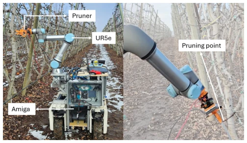
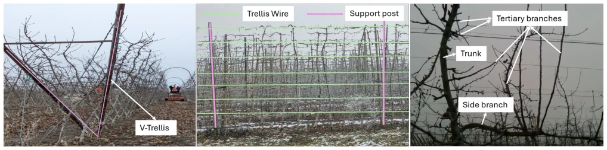
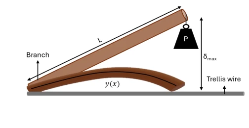
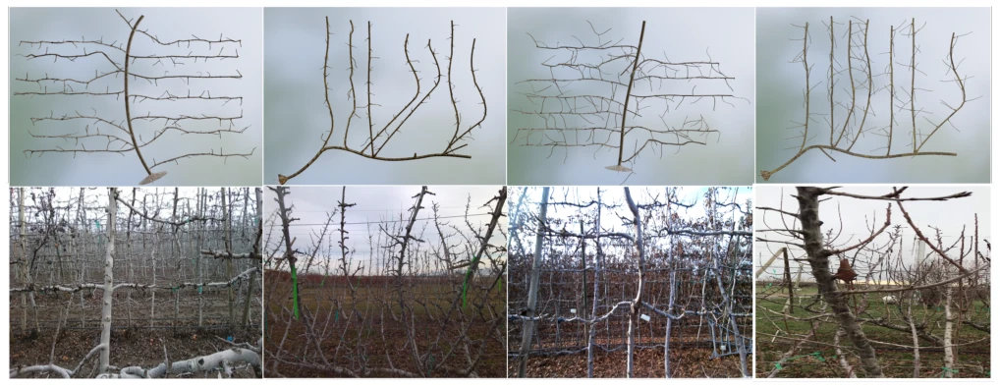
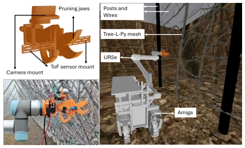
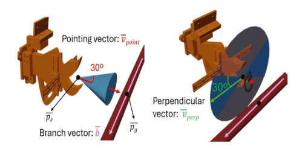
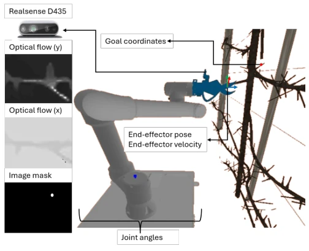
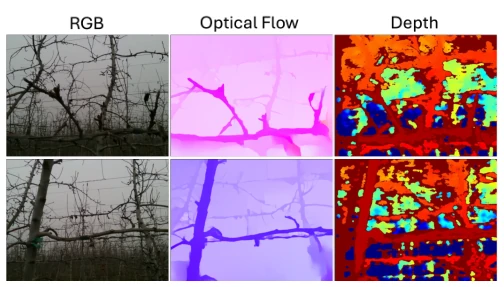
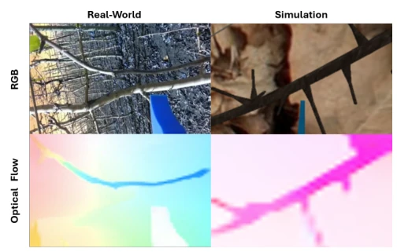
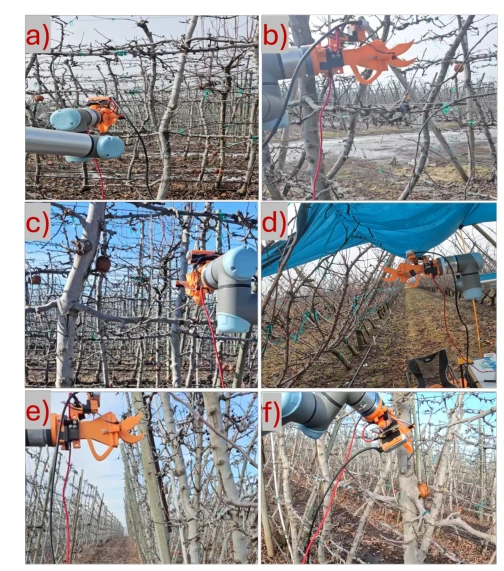

这篇论文试图用强化学习解决果园修剪的“脏活累活”。亮点在于完全避开了昂贵的 3D 重建，用光流代替深度图，实现了零样本仿真到真实迁移。但说实话，仿真里 50% 的成功率在农业场景里还是有点“看天吃饭”，虽然户外实测 V-Trellis 能到 71%，但 UFO 结构掉到 35%，说明泛化性仍有硬伤。作者没吹嘘 100% 自动化，这点值得肯定，毕竟农业机器人离“无人化”还有距离。用 Hybrid-PPO 结合离线演示是个务实的选择，比纯 RL 收敛快，比纯 BC 更灵活，但计算开销和实时性仍需工程优化。
This paper attempts to employ reinforcement learning to address the orchard pruning's "labor-intensive and arduous tasks". The highlight lies in completely avoiding expensive 3D reconstruction, substituting optical flow for depth maps, and achieving zero-shot sim-to-real transfer. However, honestly, a 50% success rate in simulation is somewhat "highly dependent on environmental conditions" in agricultural scenarios. Although outdoor measurements show V-Trellis reaching 71%, the UFO structure drops to 35%, indicating that generalization still has significant limitations. The authors did not claim 100% automation, which is commendable, as agricultural robots are still distant from "unmanned" operation. Using Hybrid-PPO combined with offline demonstrations is a pragmatic choice; it converges faster than pure RL and is more flexible than pure BC, but computational overhead and real-time performance still require engineering optimization.
研究动机Motivation
现代果园（如 V-Trellis 苹果、UFO 樱桃）需要休眠期修剪，但人工成本占年度劳动成本 25% 且效率低 [1]-[3]。现有机器人方案多依赖 3D 重建（点云），但户外强光下深度传感器性能退化 [13]，且计算密集。之前的 RL 方法 [15] 虽避开了 3D 重建，但受限于机械臂运动学约束，仅能处理垂直分支，且未在真实果园验证。本研究旨在解决视觉感知鲁棒性、复杂环境避障及零样本迁移问题，填补从仿真到真实部署的鸿沟。
Modern orchards (such as V-Trellis apple, UFO cherry) require pruning during dormancy, but labor costs constitute 25% of annual labor costs and efficiency is low [1]-[3]. Existing robot solutions mostly rely on 3D reconstruction (point clouds), but depth sensor performance degrades under outdoor strong light [13], and is computationally intensive. Previous RL methods [15], although avoiding 3D reconstruction, are limited by manipulator kinematic constraints, can only handle vertical branches, and have not been validated in real orchards. This study aims to address visual perception robustness, obstacle avoidance in complex environments, and zero-shot transfer problems, bridging the gap from simulation to real deployment.

FIGURE 1. (Left) Our pruning platform: a UR5e arm mounted on a Farm-NG Amiga base with a custom pruning tool as the end-effector. (Right) Example final configuration from a pruning trial, with the target branch positioned at the bottom of the cutter jaws.

FIGURE 2. (Left) The “V” shape of trees in V-Trellis and UFO architectures. (Middle) Orchard structures such as trellis wires (green) and support posts (pink). (Right) Different types of tree branches that contribute to visual and physical clutter.
The overall workflow is divided into simulation construction, data generation, policy learning, and deployment. First, Tree-L-Py is used to generate synthetic tree meshes conforming to V-Trellis/UFO structures, combined with PyBullet to build a physical simulation environment. The perception module discards RGB/depth maps, adopts RAFT to compute optical flow images, augmented with proprioception (joint angles, velocity). The core innovation is the Hybrid-PPO algorithm: utilizing RRT-Connect planning to generate successful trajectories as offline demonstration data, combined with PPO online rollout training. Through an advantage-weighted mechanism, the policy imitates expert data while using RL to correct suboptimal actions. The reward function includes arrival distance, directionality, verticality, and collision penalties, with weights determined empirically. The network adopts an LSTM based on an Actor-Critic architecture, containing a privileged Critic for auxiliary training, where the visual encoder fuses optical flow and masks. The final policy is directly deployed on the UR5e manipulator without additional calibration.

FIGURE 3. Modeling the branch as a cantilever beam with a fixed end for the tying process. A transverse load (Py) is applied at the free end to obtain the resulting curvature yx.

FIGURE 4. (Top row) Tree-L-Py generated Envy apple and UFO trees. (Bottom row) Images of trees from a real orchard.

FIGURE 5. (Top left) The model of the mock pruner. (Bottom left) The mock pruner attached to the UR5 arm. (Right) The simulation environment, including the robot and various orchard elements.

FIGURE 6. (Left) To point, ⃗vpoint ⊥⃗b. A 30◦tolerance yields the set of feasible solutions shown as a blue cone. (Right) To be perpendicular, ⃗vperp ∥⃗b. A 30◦tolerance yields feasible solutions forming sectors of a circle.

FIGURE 7. Our state space includes optical flow for perception and proprioceptive features, such as end-effector velocity and pose, joint angles, and the coordinates of the pruning goal.

FIGURE 8. (Left) RGB images of an orchard tree (Middle) Corresponding optical flow image obtained using RAFT [36] (Right) Corresponding depth image using Intel RealSense D435 camera.

FIGURE 9. (Top) RGB images from the real world (left) and simulation (right). (Bottom) Optical flow from the corresponding real world (left) and simulation (right) images. The color differences arise from the different motions performed.
Simulation tests cover 3000 pruning points, with V-Trellis success rate at 49.9% and UFO at 46.0%. Physical experiments totaled 38 trials, including 28 outdoor (commercial/experimental orchards) and 10 indoor. Outdoor V-Trellis reached 71%, while UFO was only 35% (due to canopy structure assumption deviations). Indoor was 90%. The comparison baseline was RRT-Connect; this method performed better on physical hardware (46.7% vs 26.6%), mainly attributed to smaller perception errors. Ablation experiments validated that Hybrid-PPO outperforms pure PPO or pure BC.

FIGURE 10. Demonstration of the autonomous pruning robot operating under diverse weather and lighting conditions: (a) overcast, (b) foggy, (c) bright sunlight, (d) rain with an artificial tarp canopy, (e) shaded, and (f) clear outdoor conditions.